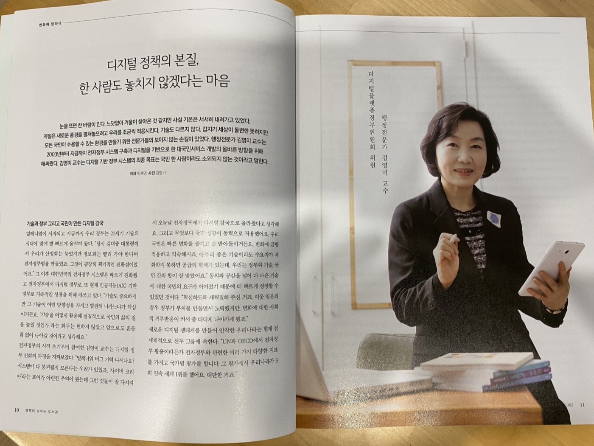

About
Biography

Professor of Public Administration
Department of Public Administration · Sangmyung University · Seoul
Placeholder — Professor Kim Youngmi is a scholar of public administration and governance whose research examines the institutional foundations of the Korean state, the dynamics of policy reform, and the evolving relationship between citizens and public institutions in contemporary East Asia.
Placeholder — Over more than three decades of scholarship, she has contributed to debates on bureaucratic legitimacy, participatory governance, and the conditions under which institutional trust is built or eroded. Her work draws on both qualitative and quantitative methods, and is informed by close engagement with practitioners in government and civil society.
Placeholder — She joined the faculty of Sangmyung University after completing her doctoral studies, and has since taught and advised generations of students who have gone on to careers in public service, policy research, and academia.
Education
0000
Doctor of Philosophy
Public Administration
Placeholder University, Seoul
0000
Master of Arts
Public Administration
Placeholder University, Seoul
0000
Bachelor of Science
Public Administration
Placeholder University, Seoul
Research Interests
Public Governance & Institutional Reform
Placeholder — administrative restructuring, bureaucratic accountability, and state capacity in Korea and comparative East Asian contexts.
Policy Process & Implementation
Placeholder — policy design, agenda-setting, and the gap between legislative intent and on-the-ground outcomes in social and welfare policy.
Civic Participation & Democratic Governance
Placeholder — deliberative democracy, participatory budgeting, and civil society's role in shaping public administration.
Awards & Recognition
0000
Placeholder Award Name
Awarding Organization
Best Paper
0000
Placeholder Award Name
Awarding Organization
Excellence in Research
0000
Placeholder Award Name
Awarding Organization
Fellowship
Academic Service
0000–
Editorial Board Member
Placeholder Journal of Public Administration
0000–
Committee Member
Korean Association for Public Administration
0000–0000
Peer Reviewer
Placeholder International Review of Administrative Sciences